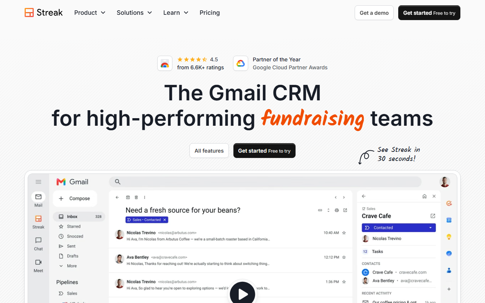
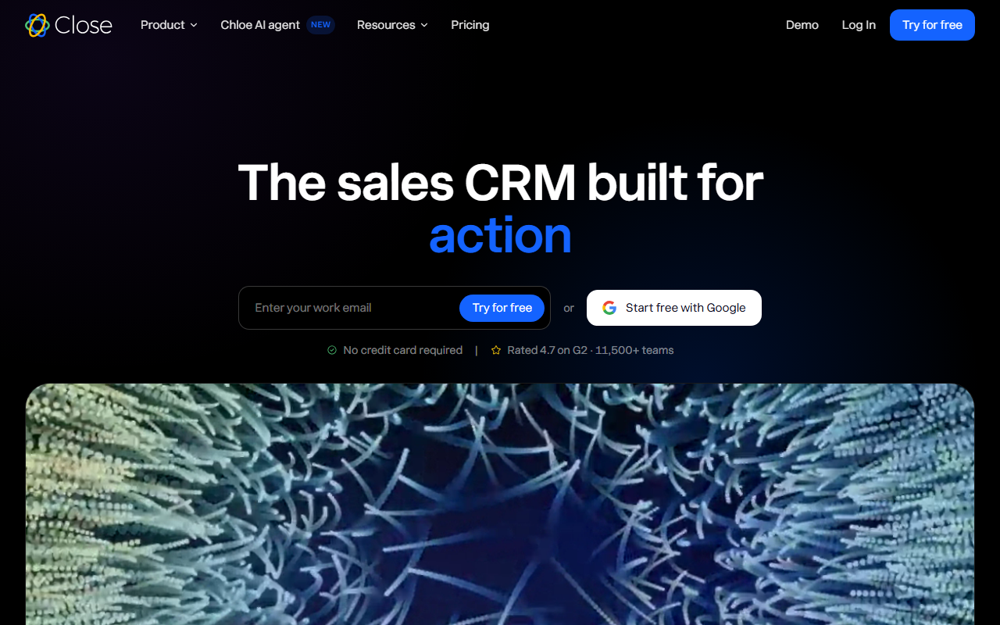
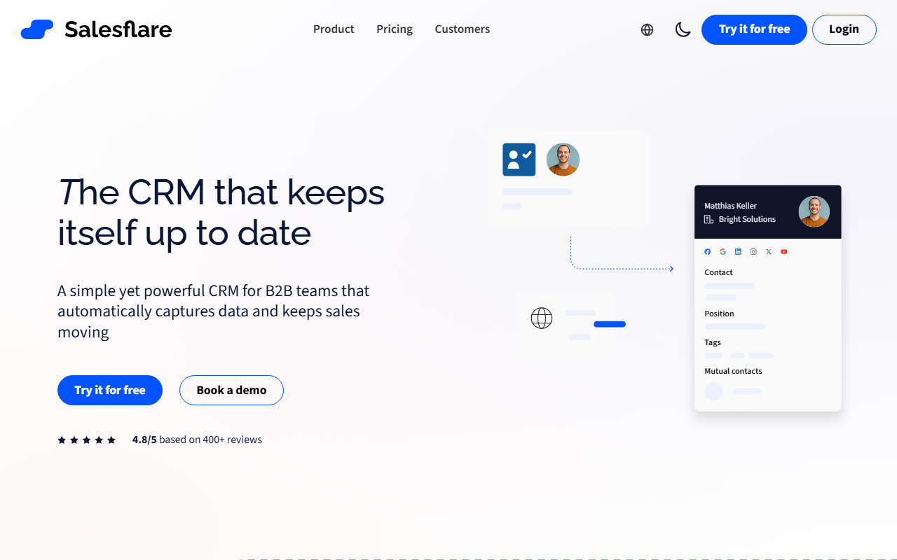
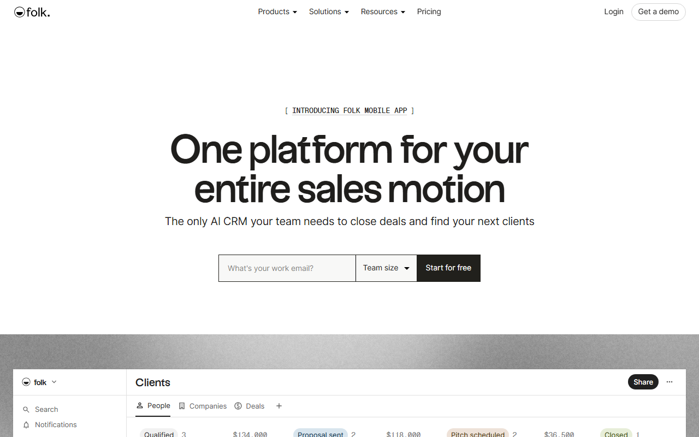
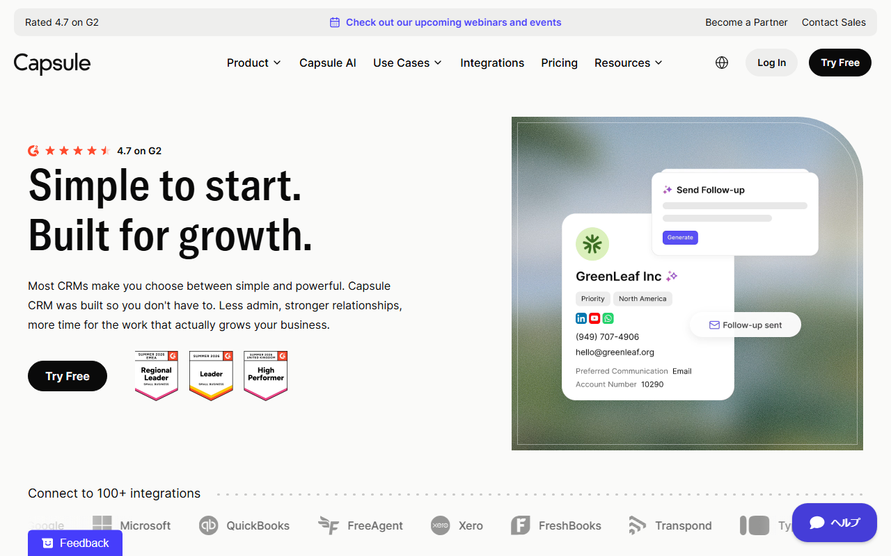

CRM比較【2026年】中小企業向け海外CRM6選｜料金・日本語・選び方
CRMは、顧客情報や商談の進み具合をチームで共有するツールです。海外CRMは、料金や無料枠、日本語対応に差があります。この記事では、中小企業向けの6製品を機能と契約条件で比べます。
中小企業向け海外CRMおすすめ6選の早見
- Pipedrive：日本語UI／Lite $14
- Streak：Gmail中心／Pro $49
- Close：1人営業／Solo $9
- Salesflare：入力自動化／Growth $29
- folk：人脈管理／Standard $24
- Capsule CRM：2人まで無料
迷ったらPipedriveがおすすめです。画面とヘルプは日本語に対応し、カード不要で14日間試せます。
日本語の製品画面と無料トライアルの入口を見られます。
CRMを比較するときの5つのポイント
比較の前に、営業の進め方と情報の入力方法を決めます。 その後、人数別の総額と日本語対応を比べます。契約条件と解約方法も見ておきましょう。


顧客情報だけか、営業パイプラインまで管理するか
会社名や連絡先だけを残すのか、商談の段階と次の行動まで管理するのか。まず、この範囲を決めます。試用時は、パイプラインと活動履歴を同じ条件で比べましょう。自動化やレポートの要否も検討します。営業会議で使いにくければ、権限や外部連携も試したうえで候補から外します。
Gmail・メール連携を日々の入力起点にするか
顧客情報をGmailから登録するなら、Gmail内で使うStreakが比較の基準です。ほかの5製品でメールを同期する場合は、対応範囲を契約前に調べましょう。試用前に、受信メールから何を残すかを決めます。どちら向きに同期するかもそろえてください。更新する担当者も同じ条件にすると、公平に比べられます。
無料枠・最低席数・月払いと年払いを分けて見る
無料で使い続けられるプランと期間限定トライアルは分けて考えます。年払いの条件と最低人数も含め、1人・3人・5人の総額を出しましょう。
日本語UIと日本語サポートを分けて確認する
画面が日本語でも、ヘルプや問い合わせ対応まで日本語とは限りません。6製品のうち日本語UIを確認できたのはPipedriveだけで、日本語での個別対応の範囲は未確認です。
支払い・請求書・データ移行・解約まで確認する
利用できるカードと請求通貨を調べます。請求書の取得方法に加え、自動更新日と解約後の利用期限も調べましょう。移行前には、取り込む項目を決め、重複データを除いておきます。
中小企業向け海外CRM6製品の特徴
6製品は、得意とする仕事が異なります。 PipedriveとCapsule CRMは、営業パイプラインの管理が中心です。StreakはGmail、Closeは電話・メール・SMSを軸にしています。Salesflareは自動取り込み、folkは関係者の管理に強みがあります。ここからは、各製品に向くチームと契約前の注意点を紹介します。
Pipedrive：日本語で営業パイプラインを管理したいチーム向け

公式サイトには、日本語表示の製品画面と14日間の無料トライアルが掲載されています。
Pipedriveには日本語UIと日本語ヘルプがあります。商談カードを段階ごとに動かせるため、進み具合がひと目で分かります。メール同期と自動化はGrowth以上の機能で、Liteでは使えません。常設無料枠はありませんが、カード不要で14日間試せます。日本から契約するとUSDで請求され、JCBやPayPalも使えます。
年払い換算はLiteが$14、Growthが$39／ユーザー／月です。Premiumは$59、Ultimateは$79。請求書は管理画面の履歴で見られ、請求先メールにも届きます。
日本語の画面でパイプラインを作れます。入力した情報を営業会議で使いやすいかどうかも試せます。
Streak：Gmailから画面を切り替えずに管理したい人向け

公式サイトには、英語表示の顧客画面が掲載されています。
StreakはGmail内で案件の段階や顧客情報を管理します。メールの履歴は該当する案件に残り、タスクはGoogleカレンダーにも同期できます。無償で使えるのは、主にメール関連の機能です。CRMパイプラインは、Pro+の14日間トライアルで試せます。
Proは年払い$49、月払い$59／ユーザー／月です。Pro+は年払い$69、月払い$89。Enterpriseは年払い$129、月払い$159です。JCBは公式の対応カード一覧に含まれます。同じ一覧にPayPalの記載はなく、使えるかは未確認です。日本語UIと日本語での個別サポートも、公式情報では見つかりませんでした。
無料のメール機能だけで足りるかを見極められます。営業案件まで管理するなら、有料プランの機能も比べてください。
Close：1人または少人数で営業活動をまとめたい人向け

英語ページの中央に、カード不要の無料試用が案内されています。
Closeは電話・メール・SMSを同じ顧客画面にまとめ、タスクと商談も管理します。Essentialsには共有受信箱が含まれます。定型フォローを自動化するWorkflowはGrowth以上の機能です。役割別の権限設定はScaleで使えます。Soloは1ユーザー限定で、リードは最大1万件まで。常設無料枠はありませんが、カード不要で14日間試せます。
Soloは年払い$9、月払い$19／月です。Essentialsは年払い$35、月払い$49／ユーザー／月。解約後も請求期間末まで使えます。30日間返金保証には対象条件があるため、申し込み前に確かめてください。
1人ならSoloを候補にします。複数人ならEssentials以上から比べ、人数が増えたときの総額まで計算しましょう。
Salesflare：英語の画面を30日間試したいチーム向け

英語ページには、無料試用とデモへの入口があります。
Salesflareは、メールや予定表から顧客と会社の情報を集めます。会議と通話も活動履歴に残ります。Growthではメール開封やWeb訪問を追跡でき、Gmailなどのサイドバーも利用可能です。Proでは、権限設定と複数段階のメール送信が加わります。レポートの内容も変更可能です。常設無料枠はありませんが、カード不要で30日間試せます。対応する7言語に日本語は含まれません。
Growthは年払い$29、月払い$39／ユーザー／月です。Proは年払い$49、月払い$64。Enterpriseは年払い$99、月払い$124です。Enterpriseは最低5ユーザーから。PDF請求書は取得できます。ただし、日本発行カードが使えるかは未確認です。日本語での個別サポートも確認できていません。
メールや予定表から活動履歴を集め、手入力を減らしたいチームに向きます。試用中は、自動で作られた顧客情報の精度を見てください。Growthのレポートで足りるかも検討しましょう。権限設定やワークフローが必要なら、英語UIでProの機能を試します。
folk：軽量な顧客・関係者管理から始めたい人向け

英語の顧客一覧画面と、無料で始めるためのフォームが掲載されています。
folkのStandardには営業パイプラインとメール配信が含まれます。連絡先情報の補完機能とLinkedIn用拡張機能も使えます。メール・予定表・WhatsAppとの同期にも対応。Premiumでは、複数段階のメール送信と役割設定が加わります。独自の取引とオブジェクトの管理もPremiumの機能です。常設無料枠はありません。Premiumの機能は、カード不要で2週間試せます。試用終了後は、契約するまでアカウントを利用できません。必要なら1週間の延長を申請できます。
Standardは年払い$24、月払い$30／メンバー／月です。Premiumは年払い$48、月払い$60。Enterpriseは年払い$80から、月払い$100からです。請求履歴は管理画面とメールで確認できます。日本語UIと日本語での個別サポートは、公式情報では見つかりませんでした。JCBが使えるかどうかも未確認です。
LinkedInから集めた人脈の整理から個別メールの送信まで、同じ場所で進めたい人に向きます。試用中は、Standardのパイプラインと一斉メールで足りるかを見てください。Premiumの取引管理・メールシーケンス・役割設定が必要かも見極めます。
Capsule CRM：2人までの無料枠から始めたいチーム向け

英語ページの上部に、無料試用の入口があります。
連絡先とタスクをまとめ、予定と商談も管理するのがCapsule CRMです。案件はカンバン形式で動かせます。無料枠では、2ユーザー・250連絡先まで登録可能です。カスタムフィールド5件とパイプライン1件も使えます。有料プランはカード不要で14日間試せます。複数パイプラインと営業自動化はGrowth以上の機能です。
年払い換算はStarter $18・Growth $36・Advanced $54／ユーザー／月です。Ultimateは要問い合わせ。支払いはVisa・Mastercard・American Expressに対応しています。JCBは公式一覧になく、画面も日本語に対応していません。
まずは2人・250連絡先・1パイプラインで使います。どの上限に達したら有料プランへ移るかも決めておきましょう。
料金は1人・3人・5人の総額と無料条件で比べる
1人・3人・5人の総額を、月払いと年払いに分けて比べます。 無料枠と試用期間は料金とは別に見てください。以下の円換算は1ドル=159円でそろえた月額の目安です。為替で変わるため、契約時にはUSDの請求額も確認しましょう。
常設無料プランと期間限定トライアルを分ける
- Pipedrive：常設無料枠なし。カード不要の14日間トライアル
- Streak：無料枠あり。ただしCRMパイプラインなし。Pro+は14日間トライアル
- Close：常設無料枠なし。カード不要の14日間無料トライアル
- Salesflare：常設無料枠なし。カード不要の30日間トライアル
- folk：常設無料枠なし。カード不要の2週間トライアル
- Capsule CRM：2ユーザー、250連絡先、1パイプラインまで無料。有料プランは14日間トライアル
月払いと年払いで1人・3人・5人の総額を出す
- Pipedrive Lite：年払い換算は1人$14（約2,226円）、3人$42（約6,678円）、5人$70（約11,130円）／月。月払いは$24（約3,816円）、$72（約11,448円）、$120（約19,080円）／月
- Streak Pro：年払い換算は1人$49（約7,791円）、3人$147（約23,373円）、5人$245（約38,955円）／月。月払いは$59（約9,381円）、$177（約28,143円）、$295（約46,905円）／月
- Close：1人限定のSoloは年払い換算$9（約1,431円）、月払い$19（約3,021円）／月。Essentialsは3人なら年払い換算$105（約16,695円）、月払い$147（約23,373円）／月、5人なら$175（約27,825円）と$245（約38,955円）／月
- Salesflare Growth：年払い換算は1人$29（約4,611円）、3人$87（約13,833円）、5人$145（約23,055円）／月。月払いは$39（約6,201円）、$117（約18,603円）、$195（約31,005円）／月
- folk Standard：年払い換算は1人$24（約3,816円）、3人$72（約11,448円）、5人$120（約19,080円）／月。月払いは$30（約4,770円）、$90（約14,310円）、$150（約23,850円）／月
- Capsule CRM Starter：年払い換算は1人$18（約2,862円）、3人$54（約8,586円）、5人$90（約14,310円）／月。月払いは$21（約3,339円）、$63（約10,017円）、$105（約16,695円）／月
最低ユーザー数・請求通貨・返金条件を確認する
料金はUSD表示が基準です。folkはEUR、Capsule CRMはGBPとEURも選べます。Salesflare Enterpriseは最低5ユーザーで、CloseのSoloは1ユーザー限定です。年払い換算は、月当たりに直した比較値。契約時には、請求周期と一度に支払う金額を別々に見てください。
返金されない料金もあります。対象は、Pipedriveの年払い未使用期間・Salesflareの過去請求・folkの支払済み料金です。返金可否はStreakが判断します。申請できるのは、月払いが14日以内、年払いが30日以内です。Closeには30日間返金保証があります。
LiteからUltimateまでの料金と機能差を一覧で見られます。
日本から契約するときは日本語・支払い・請求書を確認する
日本語UI・日本語ヘルプ・日本語での個別対応は別物です。 利用できるカードと請求通貨も製品ごとに違います。請求書の取得方法も調べておきましょう。
日本語UIを確認できるのはPipedrive
Pipedriveは日本語UIと日本語ヘルプを提供しています。ただし、日本語での個別対応範囲は確認できていません。SalesflareとCapsule CRMは、公式の対応言語に日本語を含みません。Streak・Close・folkでは、日本語UIも日本語での個別サポートも確認できませんでした。
日本発行カード・JCB・PayPalの可否を分けて見る
- Pipedrive：日本ではUSD請求。JCBとPayPalを含む主要な支払い方法に対応
- Streak：JCBを含む主要カードに対応。PayPalは公式の対応一覧に記載がなく、可否は未確認
- Close：カードなどを利用可能。対応ブランドとJCBの可否は未確認
- Salesflare：カード・口座振替・銀行振込などを利用可能。日本発行カードとJCBの可否は未確認
- folk：クレジットカードのみ。対応ブランドとJCBの可否は未確認
- Capsule CRM：Visa・Mastercard・American Expressに対応。JCBは公式一覧になし
請求書の取得方法と税務処理を確認する
PipedriveとCloseの請求情報は、管理画面やメールで見られます。Salesflare・folk・Capsule CRMも同様です。セルフサービス契約のStreakで請求書を取得できるかは未確認。税務上の扱いは、必要に応じて税理士に相談してください。
日本語画面の有無に加え、USD請求・利用するカード・請求書の保存方法も調べられます。
無料で始めるなら「CRM機能が使えるか」まで確認する
CRM機能を無料で使い続けられるのはCapsule CRMです。 一方、Streakの無料枠にはCRMパイプラインが含まれません。ほかの4製品が提供するのは、期間限定の無料トライアルです。無料で使い続けられる製品とは分けて考えましょう。

CRM機能を無料で続けられるCapsule CRM
この無料枠は2ユーザー・250連絡先までです。さらに、カスタムフィールド5件とパイプライン1件も使えます。いずれかを超えたら有料プランを検討しましょう。
無料枠へ少量の顧客データを入れます。利用人数・連絡先数・パイプライン数のうち、最初に上限へ達するものを調べましょう。
Streakの無料枠はメール機能が中心
メール追跡・スニペット・1日50通までのメール差し込みが、Streakの無料枠の中心です。CRMパイプラインは含まれず、Capsule CRMと同じ無料条件ではありません。
Pipedrive・Close・Salesflare・folkはトライアルで判断する
試用期間はPipedriveとCloseが14日間です。Salesflareは30日間、folkは2週間あります。各製品に同じ顧客と案件を登録し、パイプラインと活動履歴を比べましょう。自動化とレポートを試した後、権限や外部連携も確かめます。
Pipedriveはカード不要で14日間試せます。日本語UIとパイプラインが使いやすいかを見て、終了前に契約するか決めましょう。
導入前にデータ移行・定着・解約を確認する
契約前に、顧客データと入力ルールを整えます。 自動更新日と、解約前にデータを書き出す手順も決めておきましょう。機能不足に加え、データの重複や更新担当者の不在もCRMの定着を妨げます。
CSV移行前に重複と必須項目を整理する
会社名・担当者名・メール・商談段階など、入力を欠かせない項目を決めます。重複したデータも除いてください。製品によって、CSVの取り込み方法と対応項目は異なります。まず少量を取り込み、文字化けや空欄がないかを見てから本移行へ進みましょう。
メール同期・権限・退職者アカウントの扱いを決める
メール同期や権限機能が必要なら、使えるプランを契約前に調べます。次に、どのメールを同期するかを決めましょう。顧客情報を変更する人と、退職者のデータを引き継ぐ人も決めます。試用中は数件の顧客データを使い、普段の更新手順を再現してください。
解約・ダウングレード前にデータを書き出す
書き出せるデータは製品ごとに異なります。解約前に、必要なデータの保存を終えてください。Pipedrive・Close・Salesflare・folkは請求期間末まで利用可能です。Streakは管理画面から自動更新を停止できます。解約後、Capsule CRMにはアクセスできません。14日間の復元期間後にデータが削除されます。
無料枠から有料プランへ切り替わる条件を確かめられます。
CRM選びでよくある質問
無料枠の有無をはじめ、CRMとSFA・MAの違いや国内大手との比較について答えます。
無料で使い続けられるCRMはある？
常設無料枠でCRMパイプラインを使える候補はCapsule CRMです。メール機能が中心なのはStreakの無料枠です。ほかの4製品は期間限定トライアルのみ。「無料で継続」と「契約前の試用」は分けて考えましょう。
CRMとSFA・MAの違いは？
CRMは顧客情報、SFAは商談や営業活動、MAは見込み客への働きかけの管理が中心です。機能は重なるため、どこまで一つにまとめるかで選びます。
HubSpotや国産CRMも一緒に比べるべき？
日本語での導入支援や国内向けの請求方法を優先するなら、国内大手も比較対象です。大規模な権限設計が必要な場合も同じです。HubSpot・Salesforce・Zoho CRMや国産CRMを先に比べてください。本記事の6製品は、少人数で海外ベンダーと直接契約する場合の候補です。
まとめ：候補を3つに絞り、無料枠かトライアルで確かめる
日本語を優先するならPipedriveが第一候補です。 Gmail内で管理したい人にはStreak、無料で使い続けたい人にはCapsule CRMが合います。1人営業ならCloseも候補です。Salesflareとfolkは、英語の画面でも支障がない場合に向きます。必要な機能を試用中に見極め、候補を3製品までに絞りましょう。
優先条件を1つ決める
まず、日本語が必要か、Gmailを中心に使うかを決めます。無料で使い続けたいか、1人で営業するかも分かれ目です。英語だけの製品を候補に残すかも判断しましょう。最後に、誰が何を入力するかを決めます。
候補を3製品までに絞る
- 日本語を優先：Pipedrive
- Gmail内で完結：Streak
- 無料で継続：Capsule CRM
- 1人営業：Close
- 英語画面を試す：Salesflareまたはfolk
同じ顧客データを同じ期間で試す
各製品に同じ顧客と案件を登録し、営業会議で使うところまで試します。終了日・自動更新日・人数別総額を記録してください。1製品に決めてから、すべてのデータを移します。
日本語UIを14日間のトライアルで試せます。
Gmail内の画面構成とプランの違いが分かります。
Soloと複数人向けプランの内容を比較できます。
30日間の無料試用を始める手順が分かります。
顧客・関係者管理の画面を見て、試用を始められます。
2人まで使える無料枠と有料プランの違いが分かります。